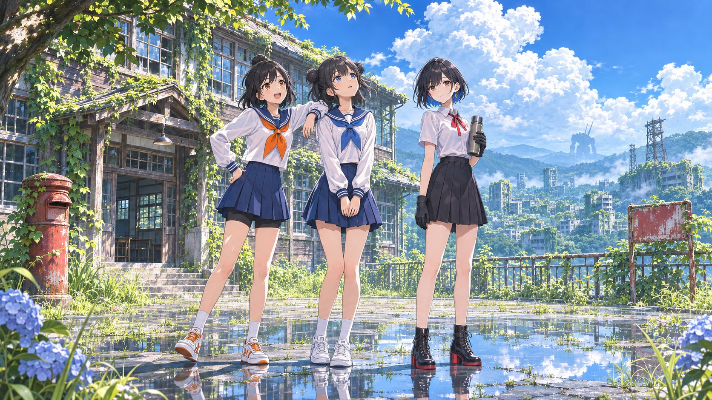
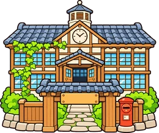
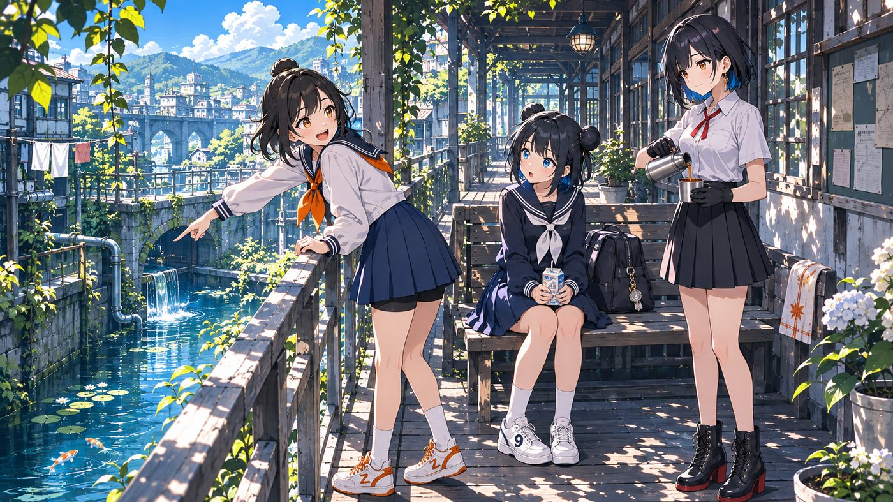
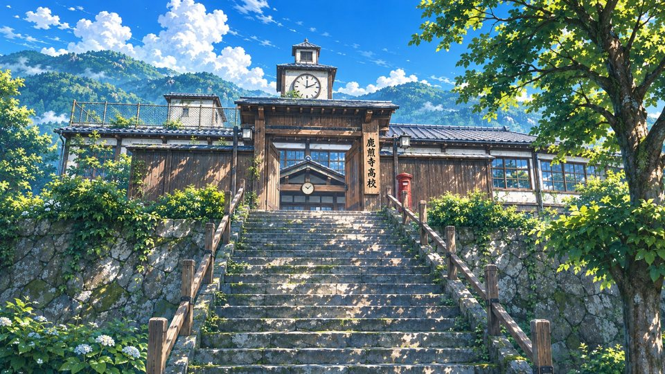
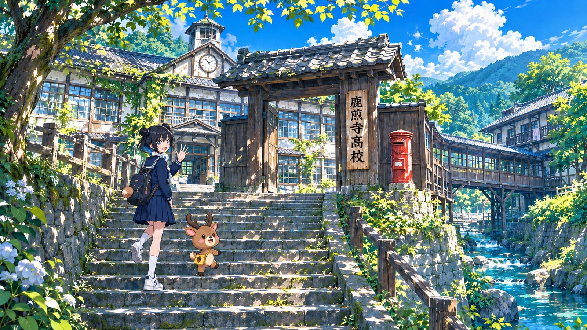
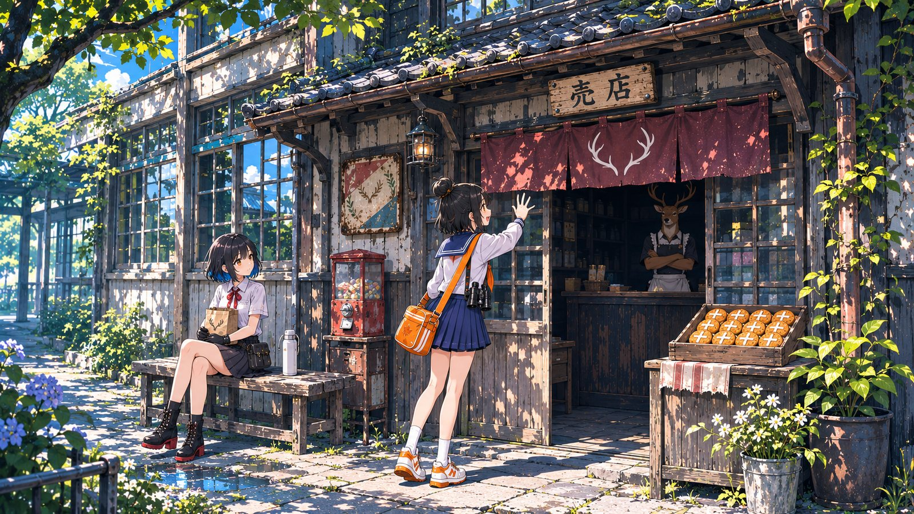
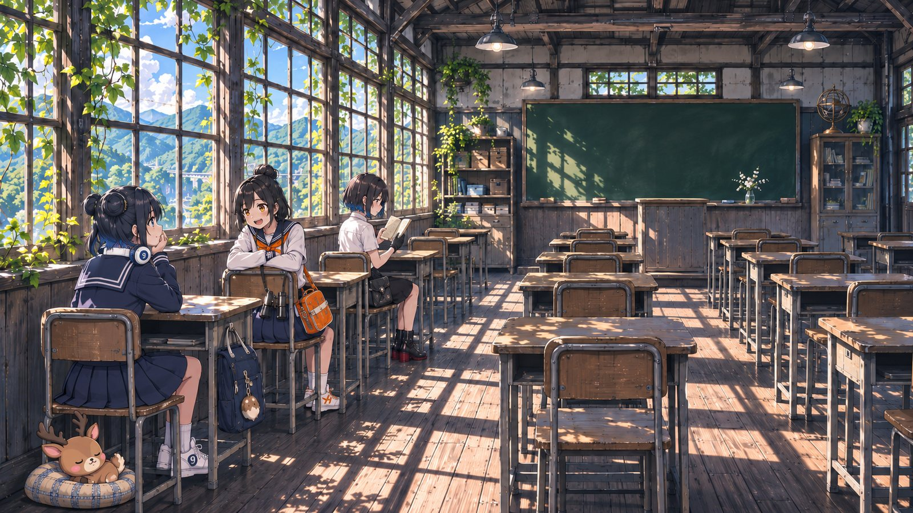
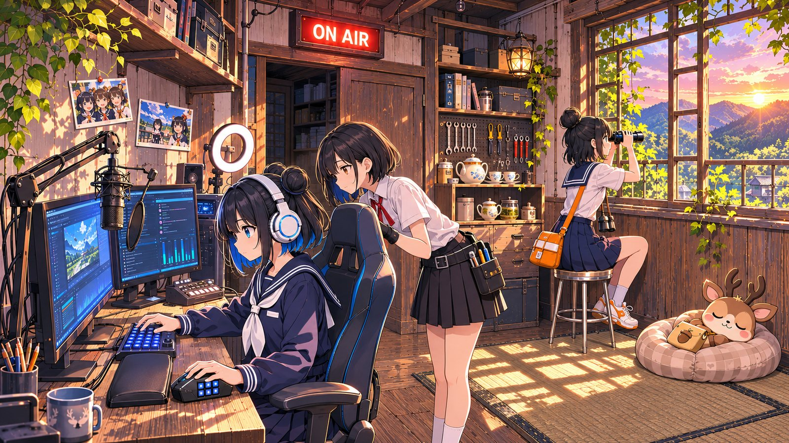
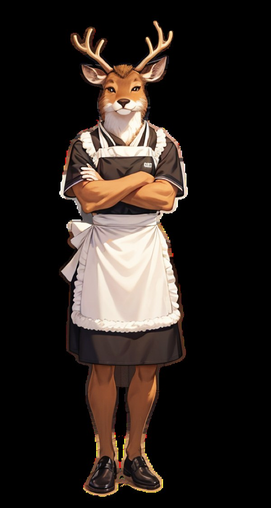

鹿煎寺高校
[off air] SHIKASENJI HIGH SCHOOL
鹿煎寺高校配信部！
ここでは知られざる学校の舞台裏をご紹介
EVENTイベントのお知らせ
しかちゃんの配信日記

もみじと凛の活動日記
もみじと凛の活動日記です。校外の調達はもみじ、校内と廃墟の整備は凛。ふたりが、その日にあったことを書いています。
校内記録
不思議で素敵な鹿煎寺高校
あーすさんは、フォートナイトの配信者です。不思議で素敵な学校、鹿煎寺高校から配信しています。
山の上に、古い木造の校舎があります。まわりは蔦と水と、青い空。緑は明るく、とても静かです。
あーすさんはこの学校の寮で暮らしながら、毎日の配信を届けています。ここは鹿煎寺高校配信部。配信には映らない、学校の舞台裏をのぞけます。

緑と水と青い空の学校
蔦に覆われた校舎、足もとを流れる水路。どこを見ても、絵みたいにきれい。
山の上木造の校舎
生徒は敷地の中で思い思いに過ごす。寮に住む子も、近くの廃墟に住む子もいる。
校内の売店
食べものも日用品も、だいたいここでそろう。店長は、鹿。
山の外へ出るときは
売店で装備を借りること。ひとりでは行かないこと。暗くなる前に戻ること。
EMBLEM鹿煎寺高校の校章
鹿の角に、鹿せんべいをあしらった校章。まんなかの丸が、鹿せんべい。

鹿煎寺高校 学校案内 2027PAMPHLET学校案内パンフレット 2027
鹿煎寺高校の学校案内。表紙から裏表紙まで、1冊まるごと読める。
パンフレットをひらく校内案内
PLACES
SCHOOL鹿煎寺高校
山の上に建つ、2階建ての木造校舎。苔むした石段を上ると木の校門、その横に赤いポスト。校舎の裏には寮があって、木の渡り廊下でつながっている。

SHOP鹿店長の売店
校舎の1階の端にある、小さな木造の店。のれんには鹿の角の印。店先の木箱の鹿せんべいは、欲しい分だけもらっていい。となりには、なぜか木刀と十手とヌンチャクがお土産みたいに並んでいる。奥はいつも、少し暗い。

CLASSROOM2年の教室
校舎の2階。窓ぎわのいちばん後ろから、あーすさん、もみじ、凛の順に座っている。あーすさんの机の横には、しかちゃんのクッション。

CLUB ROOM配信部の部室
2階の端、もとは資料室だった小さな部屋。配信はここから。入口の上で「ON AIR」のランプが赤く光ったら、静かにすること。
鹿煎寺高校の人たち
校内のことば
売店
武器娘面接
BUKI MUSUME配信部の動画「武器娘面接」。上下の矢印か、うしろの絵にふれて1枚えらぶ。いちばん手前の絵にふれると、動画がひらく。

「よう来たな。棚のもんは好きに見てってええで。
……知らんけど。」鹿店長
装備の棚
EQUIPMENT持ち物の棚
BELONGINGSみんながいつも持ち歩いているもの。横になぞるか、カードにふれて1枚えらぶ。
鹿しか美術室
壁にかかっているのは、鹿煎寺高校の毎日を描いた1ページ漫画。額の中では、漫画が動いている。絵にふれると、大きく見られる。